03 · Menú Compras
El menú Compras gestiona todo el ciclo de aprovisionamiento: desde el pedido al proveedor hasta la recepción de mercancía, las devoluciones y las facturas de compra. Es el flujo que da entrada de stock al almacén.
Estructura del menú:
Compras
├── Sesiones
│ └── Crear artículos y un pedido o un albarán
├── Pedidos
├── Albaranes
├── Devoluciones a Proveedor
├── Crear borradores de albaranes...
├── Borradores
├── Efectos de pago
├── Remesas de pago
├── Cargar efectos en remesa...
└── Listados
├── Listado de documentos proveedor
└── Listado de efectos de pagoFlujo habitual de compra: Pedido de compra → recepción como Albarán de compra (entra el stock) → Factura de compra. Las Devoluciones restan stock y generan el abono al proveedor.
Sesiones ▸ Crear artículos y un pedido o un albarán
Atajo de menú: [Ctrl]+[S]
Asistente de alta rápida de compra. Pensado para cuando llega género nuevo del proveedor: en una sola pantalla das de alta los artículos (con sus colores y tallas), fijas precios de compra y venta, y al terminar la sesión se materializa generando automáticamente los artículos, los SKUs, los códigos de barras y el pedido y/o albarán de compra.
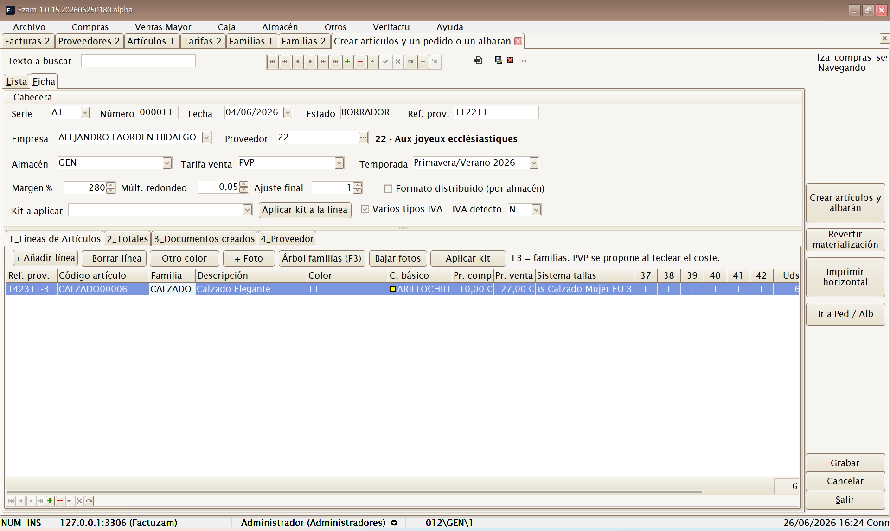
1. La cabecera de la sesión
| Campo | Descripción |
|---|---|
| Serie / Número / Fecha | Identificación de la sesión (numeración por contador). |
| Estado | ABIERTA (editable) o CERRADA (ya materializada). |
| Empresa | Empresa compradora. |
| Proveedor | Proveedor del género (botón de búsqueda). |
| Ref. prov. | Referencia del documento del proveedor (su albarán/factura). |
| Almacén | Almacén de destino de la mercancía. |
| Tarifa venta | Tarifa donde se grabarán los precios de venta calculados. |
| Temporada | Temporada a la que pertenece el género. |
| Formato distribuido (por almacén) | Actívalo si la entrada viene repartida entre varios almacenes/tiendas; las cantidades se introducen por almacén. |
Cálculo automático del precio de venta a partir del precio de compra:
| Campo | Efecto |
|---|---|
| Margen % | Porcentaje de margen que se aplica sobre el precio de compra. |
| Múlt. redondeo | Redondea el precio resultante al múltiplo indicado. |
| Ajuste final | Ajuste que se suma al final (p. ej. -0,05 para acabar en ,95). |
Puedes aceptar el precio propuesto o corregirlo línea a línea.
El Margen % se propone automáticamente a partir de los parámetros de compra del proveedor cuando lo eliges en la cabecera. El sistema de tallas se decide en cada línea o al aplicar un kit de proveedor.
2. Pestaña «Líneas de Artículos»
Cada línea es un artículo + color con su escandallo de tallas:
| Columna | Descripción |
|---|---|
| Familia (F3) | Familia del artículo; [F3] abre el árbol de familias para elegirla. |
| Cód. artículo | Código del artículo (nuevo o existente). |
| Modelo prov. | Referencia/modelo del proveedor. |
| Descripción | Descripción del artículo. |
| Color / C. básico | Color comercial y color básico de clasificación. |
| Pr. compra / Pr. venta | Precio de compra y precio de venta (propuesto por el margen). |
| Sistema tallas | Colección de tallas del artículo (S-M-L-XL, numérico…). |
| Total tallas | Total de unidades; las cantidades se reparten por talla en la matriz. |
| Importe s/IVA | Importe de la línea (compra). |
Botones de la pestaña:
- + Añadir línea / − Borrar línea — gestiona las líneas de la sesión.
- Otro color — duplica la línea actual para meter el mismo modelo en otro color sin reescribir los datos.
- Aplicar kit — vuelca una curva de tallas definida en el proveedor sobre la línea actual. En formato distribuido abre el distribuidor para aplicarlo por almacén.
- + Foto / Bajar fotos — asocia fotografías al artículo o las descarga.
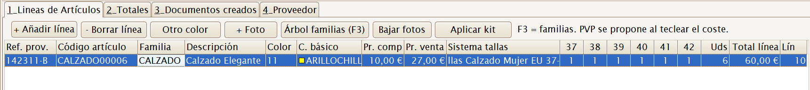
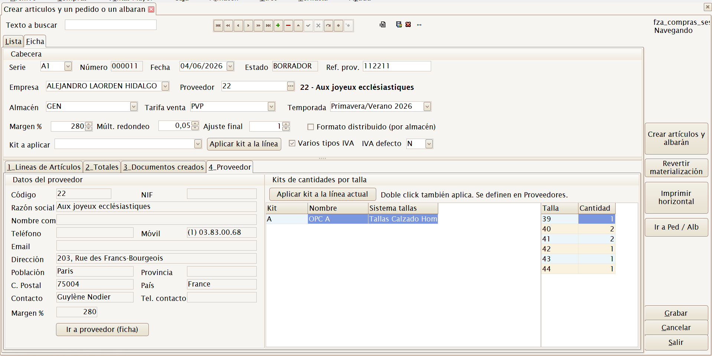
Código duplicado. Si tecleas un código de artículo que ya existe en el catálogo, la aplicación lo detecta y pregunta qué hacer: Reusar el artículo existente (no se crea uno nuevo, se le añade la compra) o Renombrar el código en esta sesión.
3. Materializar la sesión
Cuando la sesión está completa, pulsa «Crear artículos y albarán». Se abre el asistente «Crear artículos y albarán / pedido» donde confirmas qué documentos generar:
| Opción | Efecto |
|---|---|
| Generar albarán (mueve stock) | Crea el albarán de compra: la mercancía entra en el almacén destino. Eliges su serie. |
| Generar pedido (pdte. de recibir) | Crea un pedido de compra (no mueve stock, queda pendiente de recibir). Eliges su serie. |
| Fecha | Fecha de los documentos. |
| Almacén destino / Tarifa venta / Temporada | Se proponen desde la cabecera; puedes ajustarlos. |
| Ref. documento proveedor | Referencia del documento del proveedor. |
| Agrupación almacén (solo formato distribuido) | Agrupar todos los almacenes en un solo documento o generar un documento por almacén. |
Si marcas ambos documentos, se generan en orden: primero el pedido, luego el albarán.
Tras pulsar Generar, un último aviso resume lo que va a ocurrir
(«Se van a crear los artículos, SKUs, códigos de barras y enlaces al
proveedor según el detalle de la sesión») y pide confirmación
([F12] Confirmar / [Esc] Cancelar).
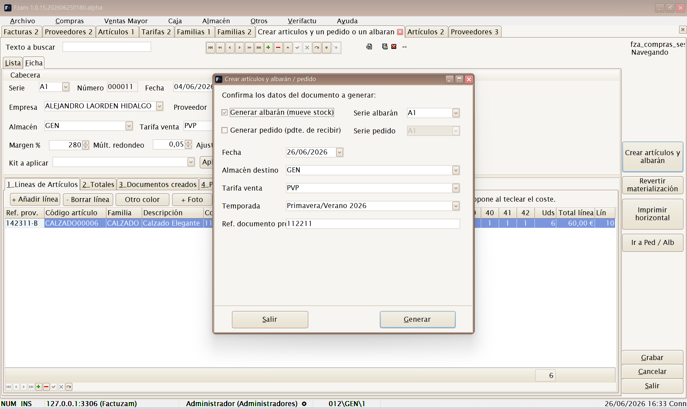
Qué hace exactamente la materialización:
- Crea (o reutiliza) los artículos de las líneas.
- Genera los SKUs por cada combinación de color/talla.
- Genera los códigos de barras de los SKUs.
- Crea los enlaces artículo–proveedor con sus referencias.
- Graba los precios de venta en la tarifa elegida.
- Genera el pedido y/o albarán de compra (el albarán da entrada al stock).
- La sesión pasa a estado
CERRADAy deja de ser editable.
4. Pestaña «Documentos creados»
Tras materializar, esta pestaña lista los documentos generados (tipo, serie, número, almacén, fecha de alta, usuario). El botón «Ir a documento (F12)» abre directamente el pedido o albarán generado. También hay accesos rápidos Ir a Artículos, Ir a Albaranes de Compra e Ir a Pedidos de Compra.
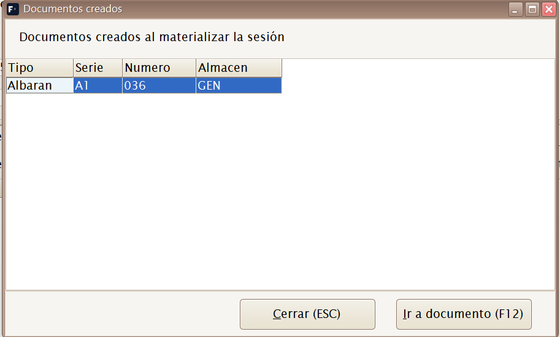
5. Revertir materialización
El botón «Revertir materialización» (disponible solo en sesiones
CERRADA) deshace lo generado: elimina los documentos creados por la
sesión y la devuelve al estado ABIERTA para corregirla y volver a
materializar.
⚠️ Úsalo solo si los documentos generados no se han trabajado todavía (no se han facturado, ni servido, ni modificado). Si el albarán ya metió stock y ha habido ventas posteriores, revisa el stock tras revertir.
6. Imprimir horizontal
El botón «Imprimir horizontal» saca un listado de la sesión con las tallas en columnas (formato apaisado), útil para repasar la entrada de género contra el albarán del proveedor.
7. Fotos de la sesión
Las fotos asignadas en una sesión todavía no materializada se guardan de forma temporal. Al materializar, se migran automáticamente al artículo o SKU creado. El botón Bajar fotos usa los parámetros de la categoría Fotos para descargar imágenes del servidor y asociarlas a la línea.
Pedidos
Mantenimiento de Pedidos de Compra. Registra lo que se ha encargado a un proveedor (todavía no ha llegado, no mueve stock).
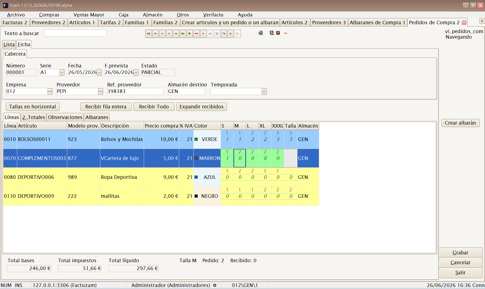
Atajo de menú: [Shift]+[Ctrl]+[P]
Un pedido tiene una cabecera (proveedor, fecha, almacén de destino, forma de pago) y un detalle de líneas (artículo/SKU, cantidades por talla, precio). Desde el pedido se puede generar el albarán de compra cuando llega la mercancía.
En la recepción, la columna A recibir no permite superar lo pendiente: si tecleas más unidades de las pedidas, la aplicación ajusta el valor al máximo disponible. Esto se aplica tanto en el modo vertical como en el pivote de tallas.
El botón Crear albarán permite dos flujos:
- Crear un albarán nuevo con las cantidades pendientes o con las cantidades introducidas en A recibir.
- Incorporar esas líneas a un albarán ya existente del mismo pedido, si se está recibiendo mercancía en varias tandas.
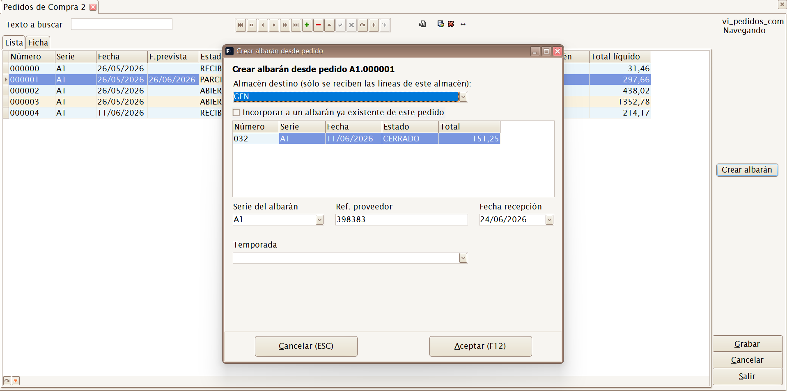
Albaranes
Mantenimiento de Albaranes de Compra. Registra la recepción real de la mercancía: al confirmar el albarán entra el stock en el almacén indicado.
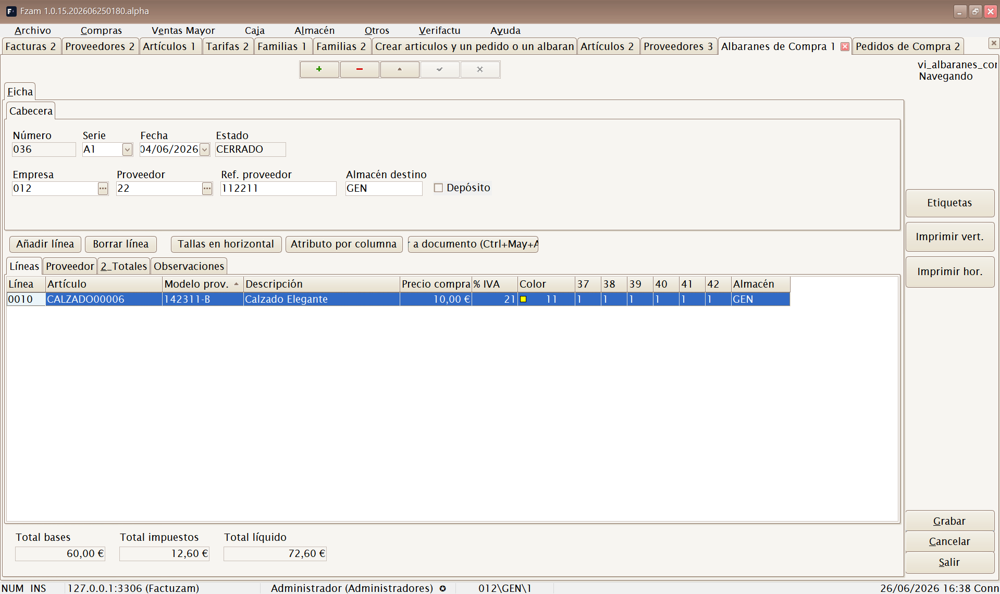
Atajo de menú: [Shift]+[Ctrl]+[A]
Puede crearse:
- A partir de un pedido previo (recepción de lo pedido).
- Directamente (compra sin pedido previo).
- Automáticamente desde una sesión de compra materializada.
El albarán es el documento que mueve existencias; la factura es solo el documento contable/fiscal asociado.
En cabecera existe la marca Depósito. Es informativa: permite indicar que la mercancía está en depósito, pero no cambia el movimiento de stock ni la facturación.
Devoluciones a Proveedor
Mantenimiento de Devoluciones a Proveedor. Registra la mercancía que se devuelve al proveedor (defectos, exceso, etc.). Al confirmarla, resta stock del almacén y sirve de base para el abono del proveedor.
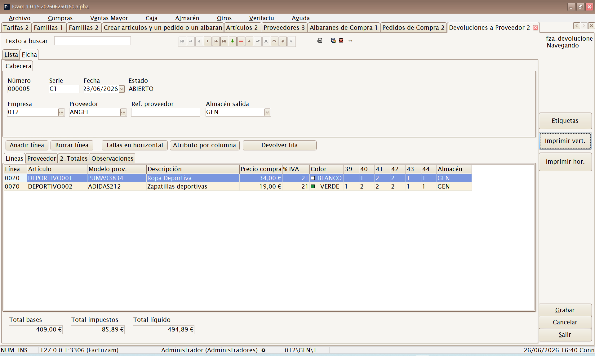
(Sin atajo de menú; se abre desde el menú.)
Crear borradores de albaranes...
Utilidad para convertir uno o varios albaranes de compra en un borrador de compra. Filtra por empresa y proveedor, muestra los albaranes pendientes y permite agrupar varios en el mismo borrador.
El formulario trabaja en dos modos:
| Modo | Resultado |
|---|---|
| Crear borrador nuevo | Genera un documento nuevo para los albaranes seleccionados. |
| Incorporar a un borrador existente | Añade los albaranes seleccionados a un borrador abierto del mismo proveedor y empresa. |
Pulsa Cargar para listar los albaranes candidatos y Crear borradores para materializarlos. Al terminar se abre el borrador/factura de compra resultante para revisar líneas, totales y efectos.
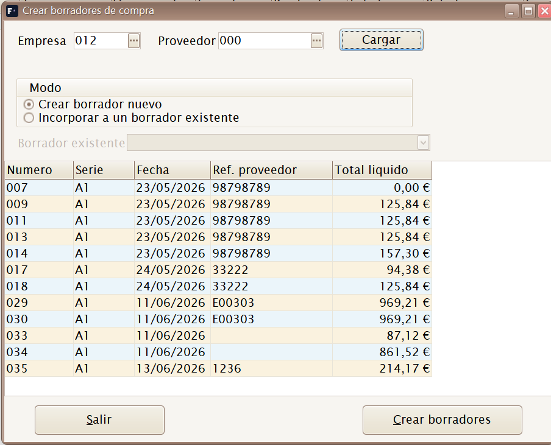
Borradores
Atajo de menú: [Shift]+[Ctrl]+[Alt]+[F]
Mantenimiento de Borradores de Compra. Es el documento de proveedor que se registra para control de gasto, IVA soportado y vencimientos de pago. En la base de datos se guarda como factura de compra; el menú mantiene la etiqueta Borradores para el trabajo previo de revisión.
Se crea manualmente o a partir de albaranes de compra. Cuando viene de albaranes, conserva la referencia al documento de origen y marca esos albaranes como facturados para evitar duplicidades.
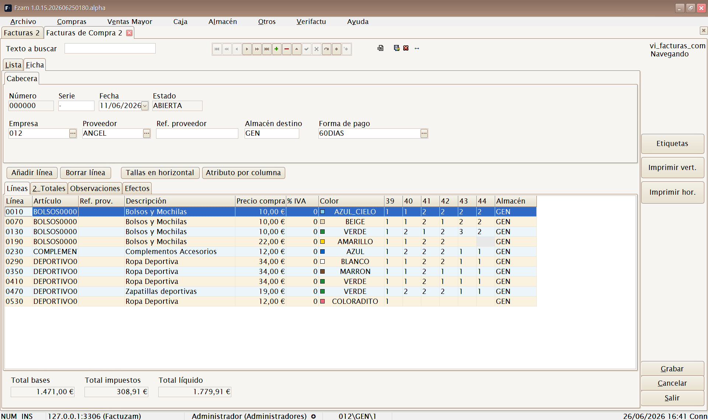
La ficha incluye:
- Cabecera — proveedor, empresa, fecha, referencia/documento externo, forma de pago y datos fiscales.
- Líneas — artículos procedentes de los albaranes o introducidos a mano.
- Efectos — vencimientos generados desde la forma de pago.
El botón Generar efectos reparte el total líquido en vencimientos y pregunta qué banco de la empresa se usará como cuenta de cargo. Si el proveedor tiene banco para pagos por defecto, aparece preseleccionado.
Estados relacionados:
| Estado | Significado |
|---|---|
| ABIERTO | Documento editable, pendiente de cerrar o revisar. |
| CERRADO | Documento validado para el circuito de pagos. |
| FACTURADO | Albarán de compra ya incorporado a un borrador/factura de proveedor. |
Efectos de pago
Atajo de menú: [Ctrl]+[Alt]+[C]
Cartera de vencimientos de proveedor. Cada efecto representa una fecha de pago pendiente, pagada, remesada o conciliada. Desde aquí puedes revisar vencimientos, registrar pagos y fusionar impagados en un efecto resumen.
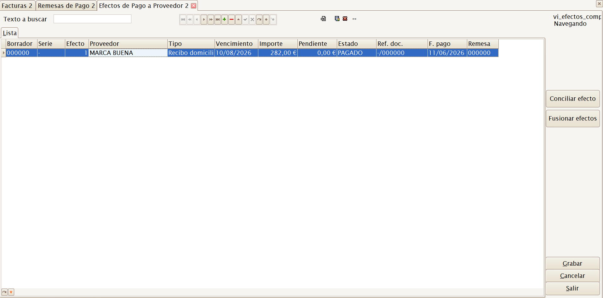
Estados habituales:
| Estado | Significado |
|---|---|
| PENDIENTE | Vencimiento vivo, todavía no pagado. |
| PAGADO | Pagado total o parcialmente. |
| REMESADO | Incluido en una remesa de pago. |
| CONCILIADO | Fusionado o regularizado con otro efecto. |
Remesas de pago
Agrupa efectos de pago para preparar una orden de pago bancaria. La remesa recoge su banco de cargo, fecha de cargo, número de efectos e importe total.
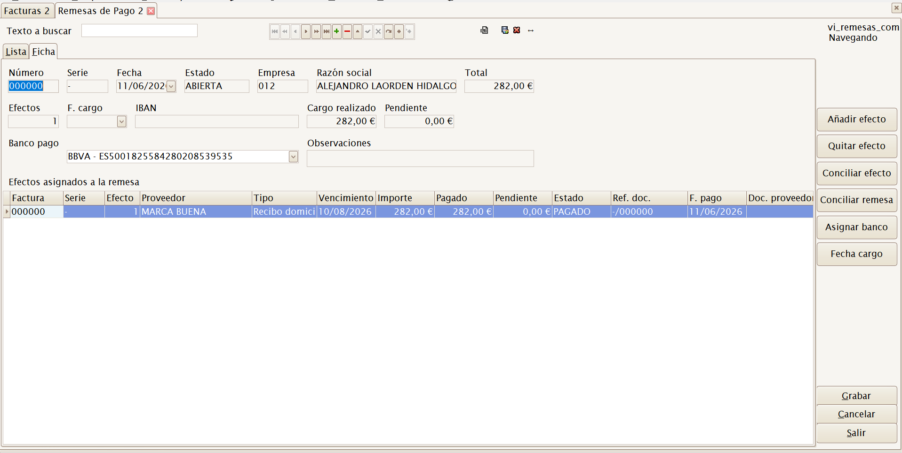
Acciones principales:
- Añadir efecto — abre la selección de efectos pendientes.
- Quitar efecto — retira el efecto seleccionado de la remesa.
- Pagar efecto — registra el pago de un efecto concreto.
- Pagar remesa — marca como pagados los efectos de la remesa.
- Asignar banco — fija o cambia el banco de cargo de la empresa.
Cargar efectos en remesa...
Acceso directo al selector de efectos pendientes para incorporarlos a una remesa de pago. Se usa cuando ya existe una remesa abierta y quieres alimentarla con vencimientos filtrados por proveedor, vencimiento o estado.
Listados ▸ Listado de documentos proveedor
Listado de documentos de proveedor para revisar pedidos, albaranes, devoluciones, borradores y vencimientos dentro de un rango de fechas o por proveedor.
Listados ▸ Listado de efectos de pago
Listado de la cartera de pagos a proveedor: los efectos (vencimientos) de compra con sus importes y situación. Permite filtrar por:
- Fechas (por fecha de vencimiento o fecha de emisión del efecto).
- Almacén y proveedor.
- Número de efecto (desde/hasta).
- Banco/remesa en que está cargado el efecto.
- Tipo de efecto y situación (pendiente, remesado, pagado…).
Puede sacarse en detalle o solo totales (con los agrupados que se marquen), y se previsualiza, imprime o exporta como el resto de listados. Es el complemento de impresión de las pantallas Efectos de pago y Remesas de pago.